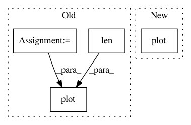

4233250171080006377b8226799730b51723e183,trunk/SUAVE/Plots/Mission_Plots.py,,plot_flight_conditions,#Any#Any#Any#,319
Before Change
axis_font = {"fontname":"Arial", "size":"14"}
fig = plt.figure(save_filename)
fig.set_size_inches(10, 8)
dist_base = 0.0
for segment in results.segments.values():
time = segment.conditions.frames.inertial.time[:,0] / Units.min
airspeed = segment.conditions.freestream.velocity[:,0]
theta = segment.conditions.frames.body.inertial_rotations[:,1,None] / Units.deg
cl = segment.conditions.aerodynamics.lift_coefficient[:,0,None]
cd = segment.conditions.aerodynamics.drag_coefficient[:,0,None]
aoa = segment.conditions.aerodynamics.angle_of_attack[:,0] / Units.deg
x = segment.conditions.frames.inertial.position_vector[:,0]
y = segment.conditions.frames.inertial.position_vector[:,1]
z = segment.conditions.frames.inertial.position_vector[:,2]
altitude = segment.conditions.freestream.altitude[:,0]
axes = fig.add_subplot(2,2,1)
axes.plot(time, altitude, "bo-")
axes.set_ylabel("Altitude (m)",axis_font)
axes.get_yaxis().get_major_formatter().set_scientific(False)
axes.get_yaxis().get_major_formatter().set_useOffset(False)
axes.grid(True)
axes = fig.add_subplot(2,2,2)
axes.plot( time , airspeed , "bo-" )
axes.set_ylabel("Airspeed (m/s)",axis_font)
axes.get_yaxis().get_major_formatter().set_scientific(False)
axes.get_yaxis().get_major_formatter().set_useOffset(False)
axes.grid(True)
axes = fig.add_subplot(2,2,3)
axes.plot( time , theta, "bo-" )
axes.set_ylabel("Pitch Angle (deg)",axis_font)
axes.set_xlabel("Time (min)",axis_font)
axes.get_yaxis().get_major_formatter().set_scientific(False)
axes.get_yaxis().get_major_formatter().set_useOffset(False)
axes.grid(True)
distance = np.array([dist_base] * len(time))
distance[1:] = integrate.cumtrapz(airspeed*1.94,time/60.0)+dist_base
dist_base = distance[-1]
axes = fig.add_subplot(2,2,4)
axes.plot( time , distance , "bo")
axes.set_xlabel("Time (min)",axis_font)
axes.set_ylabel("Distance (nmi)",axis_font)
axes.get_yaxis().get_major_formatter().set_scientific(False)
axes.get_yaxis().get_major_formatter().set_useOffset(False)
After Change
axes.grid(True)
axes = fig.add_subplot(2,2,4)
axes.plot( time , x, "bo-", time , y, "go-" , time , z, "ro-")
axes.set_ylabel("Displacement",axis_font)
axes.set_xlabel("Time (min)",axis_font)
axes.get_yaxis().get_major_formatter().set_scientific(False)
axes.get_yaxis().get_major_formatter().set_useOffset(False)
In pattern: SUPERPATTERN
Frequency: 3
Non-data size: 4
Instances
Project Name: suavecode/SUAVE
Commit Name: 4233250171080006377b8226799730b51723e183
Time: 2019-03-19
Author: mclarke2@stanford.edu
File Name: trunk/SUAVE/Plots/Mission_Plots.py
Class Name:
Method Name: plot_flight_conditions
Project Name: brian-team/brian2
Commit Name: d26070bc8206a915aeca95040d7ed2541f0bb198
Time: 2014-08-12
Author: romain.brette@ens.fr
File Name: examples/compartmental/lfp.py
Class Name:
Method Name:
Project Name: brian-team/brian2
Commit Name: c8a217afc011ea1e387c26851afe48cb655a6786
Time: 2014-07-07
Author: marcel.stimberg@ens.fr
File Name: examples/STDP_standalone.py
Class Name:
Method Name: